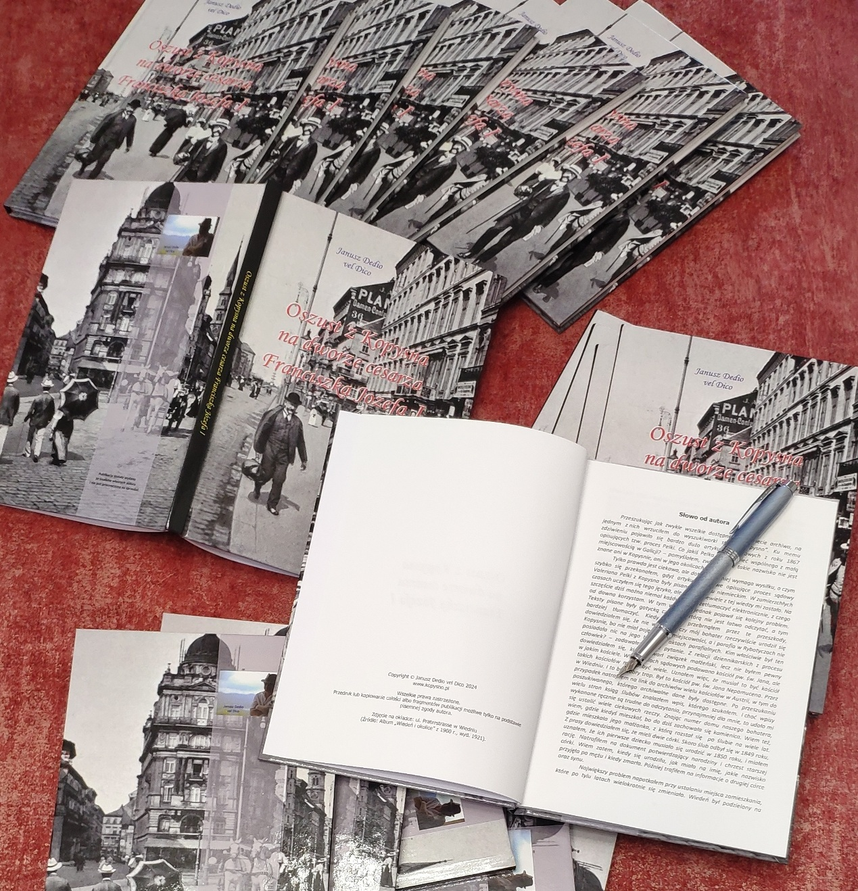
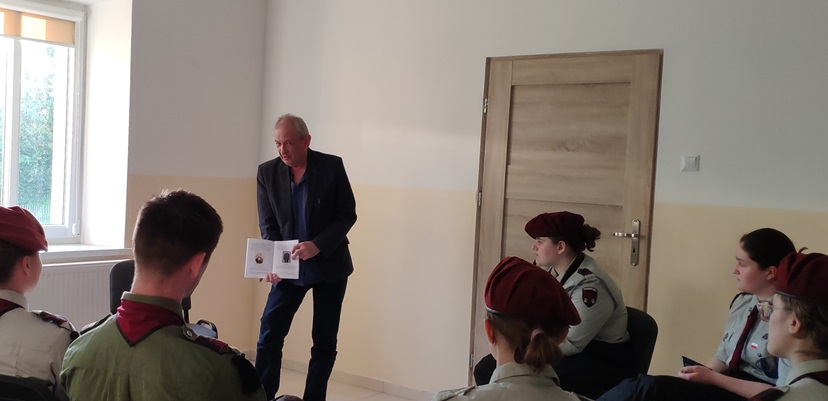

"Rozpustnik z rybotyckiego klucza"
To tytuł opowiadania o pewnym młodzieńcu z Kopysna, który zawładnął sercami wiejskich urodziwych niewiast z okolicy.
Rybotycki podglądacz, birczański alpinista, nauczyciel jazdy wierzchem, miłośnik gołąbków ziemniaczanych z sosem cebulowo... to tylko niektóre jego cechy i określenia.
Jego urokowi nie oparła się nawet pewna wdowa dziewica z Pacławia, której swoim szlacheckim kluczem, dzięki mocy ziół, uruchomił nieczynny od dnia ślubu zamek.
Innym razem sprawił, że okoliczni chłopi z wielką radością podjęli pewną eksperymentalną naukę, zarówno w sensie teoretycznym, ale bardziej praktycznym, która zaprowadziła ich w końcu do spowiedzi... grupowej.
W Birczy wykorzystał swe zdolności alpinistyczne i pod osłoną nocy, przy śpiewie słowików, wspiął się do alkowy, by uwieść pewną szlachetną wiekiem niewiastę, o czym dowiedział się po fakcie, i która nie chciała mu w końcu oddać... śpioszków.
Z powodu zamiłowania do rozdawania prezentów o mały włos, a pop Śmykewicz na rynku w Rybotyczach, nie straciłby... próbując rozdzielić wściekłe kobiety. O co poszło i jak wielka byłaby to strata dla popa, o tym
będzie można dowiedzieć się z książki.
Opowiadanie o rozpustniku ukaże się drukiem wraz z innymi opowieściami z Kopysna, o czym nie omieszkamy poinformować zainteresowanych.
"Wioskach należących do Rybotycz dowiaduję się że zwłoki Biskupa ruskiego Kopystyńskiego mają spoczywać wiosce Kopysnie, któren Unię pierwszy przyjoł czego jaśniej dochodzić będę, a że w Posadzie Rybotyckiej Bazylianie były otym wątpienia niema."
Powyższe słowa w liście do Franciszka Siarczyńskiego skierował ojciec Antoniego i Józefa Tyszkowskich, Wincenty (pochowany w kaplicy grobowej w Kalwarii Pacławskiej).
Czyżby jednak w Kopysnie znajdował się grób biskupa Michała Kopystyńskiego? Więcej na stronie w zakładce Dzieje wsi.
Uzupełniliśmy stronę o link do akt majątkowych i rodzinnych Józefa Tyszkowskiego z lat 1761-1840 - Dzieje wsi.
***
Nieliczni wiedzą, że w Kopysnie znajdują się dwa ziemne nasypy, jeden z nich jest dobrze znany, to Horbysko. Drugi czeka na odkrycie. Wczesną wiosną przyszłego roku planujemy zlokalizować miejsce, gdzie się znajduje. Chętnych zobaczyć z nami tajemniczy pagórek serdecznie zapraszamy. Więcej szczegółów podamy we właściwym czasie.
W piątek 15 listopada br. miała miejsce premiera niezwykłego filmu (link poniżej) autorstwa STREFA CZYTACZA,
do obejrzenia którego serdecznie zapraszamy, nie omieszkając oczywiście zachęcić wszystkich, który jeszcze tego nie uczynili, do lektury wszystkich tomów „Sagi rodu Tyszkowskich” Magdy Skubisz.
„Klątwa, więzienie, stara krypta i zapomniana rodzina. Saga Rodu Tyszkowskich.”
Bardzo dziękujemy autorom za reklamę naszej strony i oświadczamy, że zaszczytem było uczestniczyć w realizacji tego filmu, będącego naszym zdaniem pilotem serialu o rodzie Tyszkowskich.
Ze swej strony, zainteresowanym poszerzeniem wiedzy o rodzinie Tyszkowskich, polecamy nieznaną historię człowieka, który urodził się w ich dworku w Kopysnie i który nieźle namieszał na dworze samego cesarza Franciszka Józefa I (skrót historii: Oszust z Kopysna).
***
Pragniemy poinformować, iż poza wyjątkami (reklama, propozycje pracy itp.) zawsze odpowiadamy na przesłane nam wiadomości e-mail. Jeżeli ktoś nie otrzymał odpowiedzi z przyczyn niezależnych od nas, prosimy nas o tym poinformować, korzystając z numeru telefonu zamieszczonego w zakładce KONTAKT. Wystarczy wysłać wiadomość SMS.
Niewiele wiemy, jak wyglądało życie mieszkańców wsi Kopysno podczas Wielkiej wojny, zwanej później I wojną światową. Z przyjemnością więc przedstawiamy wspomnienia nieznanego z nazwiska mieszkańca sąsiedniej wsi Makowa (zw. Makową kolonią, Makową niemiecką), pochodzenia niemieckiego i wyznania ewangelicko-augsburskiego, który opisał początki wojny.
„19 września 1914 r. mieliśmy pierwsze kwaterowanie Rosjan. Byli to Kozacy, którzy dosłownie zalali naszą wioskę. Mieszkańcy byli bardzo zdezorientowani, ale wkrótce to ustąpiło, gdy ludzie zdali sobie sprawę, że Kozacy nie wyrządzają im krzywdy. Nie wolno im było jednak przeszkadzać w ich działaniach w stodołach, na polach ziemniaków i wśród drobiu, w przeciwnym razie zostaliby źle przyjęci. Ich pobyt trwał 12 dni, w tym czasie domy i budynki gospodarcze Johanna Actersmanna, Philippa Manlera i stodoła Philippa Helbiga spłonęły, ale nie było to celowe działanie, lecz z powodu nadmiernego ogrzewania podczas gotowania. Odeszli 1 października i znów mogliśmy odetchnąć z ulgą.
6 października dotarły tu nasze wojska, po czym odeszli na wschód od Nowego Miasta (ob. Ukraina, niedaleko przy granicy z Polską) trwała 21-dniowa bitwa.
Na początku listopada nasze wojska wycofały się, a my z niepokojem oczekiwaliśmy nadchodzących dni. Poza dwiema rodzinami nikt stąd nie zdecydował się na ucieczkę, bo odradzał nam to kwaterujący w naszej szkole podpułkownik, mówiąc, że nie należy wyjeżdżać z małymi dziećmi za granicę, gdy zima tuż, tuż.
7 listopada przybyła do nas rosyjska piechota, ale tym razem bardzo się nam dłużyła, bo kwaterowanie trwało do 20 marca 1915 r., oczywiście z przerwami, gdy jeden oddział musiał ratować drugi z okopów pod Przemyślem.
To były dla nas gorzkie godziny, ale wciąż mieliśmy schronienie i jedzenie, które w przeciwnym razie zostałyby całkowicie odebrane. Oczywiście żywność była zabierana całkowicie i to za bardzo niską cenę, czasami nawet za darmo. Podobnie było z bydłem. Do jednej krowy wszystko zostało zabrane, niektóre konie zostały nawet skradzione. Pomimo wszystkich szkód poniesionych przez okolicznych mieszkańców, wciąż można było usłyszeć powtarzane: „To i tak wszystko głupota, jeśli tylko nasz cesarz wygra!”.
Nasz nauczyciel Jaki (Georg) mógł bez przeszkód odprawiać nabożeństwa w niedziele i święta, a wielu Rosjan nawet brało w nich udział, mimo że nic z nich nie rozumieli.
Lekcje w szkole zostały odwołane, ponieważ klasa, z której wyrzucono ławki, była zawsze wypełniona ponad setką Rosjan. Zajęcia nie mogły się rozpocząć aż do teraz, ponieważ piec został zrujnowany i musi zostać odbudowany; ławki również zostały częściowo uszkodzone i muszą zostać naprawione.
29 czerwca 1915 r., nasz drogi pastor Salfeld z Bandrowa (k/Ustrzyk Dolnych) mógł odwiedzić nas po raz pierwszy w czasie wojny i przeprowadzić nabożeństwo i komunię świętą. Teraz jednak nabieramy nowej odwagi w obliczu zwycięskich postępów naszych wojsk i jesteśmy głęboko przekonani, że dobry Bóg pomoże nam również w dalszym zwycięstwie. Tak, niech Bóg trzyma Cesarza z daleka i da mu zwycięstwo!”.
(Źródło: Evangelisches Gemeindeblatt für Galizien und die Bukowina. 1915 r. Nr 15)
***
Jednocześnie informujemy, że pojawiło się II wydanie publikacji "Oszust z Kopysna na dworze cesarza Franciszka Józefa I" (Wydawnictwo Dedio; ISBN 978-83-973242-0-6).
Poniżej przedstawiamy opracowanie dotyczące nieznanych "skarbów" rodziny Tyszkowskich i życzymy miłej lektury.
"Skarby Tyszkowskich" - opracowanie nie jest już dostępne
Podczas przygotowywania opracowania na temat tajemniczego nagrobka, natknęliśmy się na ciekawy materiał dot. budowy linii kolejowej Przemyśl-Łupków, zwanej „Pierwszą Węgiersko-Galicyjską Koleją Żelazną”. Jednym z koncesjonariuszy był Józef Tyszkowski, właściciel miejscowości Huwniki, brat Antoniego Tyszkowskiego, właściciela Kopysna i stryj Pawła Tyszkowskiego, który w latach późniejszych chciał budować linię kolejową Niżankowice-Sanok. Opracowanie polecamy zwłaszcza miłośnikom kolei z czasów panowania cesarza Franciszka Józefa I.
"Józef Tyszkowski buduje kolej" - opracowanie nie jest już dostępne
W przygotowaniu mamy sensacyjną historię zorganizowanej grupy oszustów, którzy zapragnęli zagarnąć wielotysięczne włości Pawła Tyszkowskiego.
Bardzo nam miło zakomunikować, iż udało nam się dotrzeć do informacji na temat jednego z braci Mikołaja, Pawła i Józefa Nienadowskich - Michała, który zmarł w wieku 18 lat. Informacje o nim dostępne są w zakładce Michał Nienadowski.
W załączeniu przedstawiamy historię planowanej budowy sieci kolejowej przebiegającej przez miejscowość Rybotycze do Sanoka. Zapraszamy do lektury.
"Stacja kolejowa Rybotycze" - opracowanie nie jest już dostępne
W kolejnej historii postaramy się rozwikłać tajemnicę osoby pochowanej na cmentarzu w Kalwarii Pacławskiej oraz przedstawić historię jego żony, o której wspomnieliśmy w jednym z opracowań. Tytuł opracowania "Tajemniczy grób w Kalwarii Pacławskiej".
W wiadomościach z 17 lipca 2023 r. informowaliśmy o przyznaniu władzom powiatu przemyskiego dotacji z tzw. Rządowego Programu Odbudowy Zabytków w kwocie 490 tys. złotych na prace remontowo-renowacyjne cerkwi w Kopysnie.
Z nieznanych nam powodów Zarząd Powiatu Przemyskiego w dniu 28 maja 2024 r. podjął decyzję o odstąpieniu od realizacji ww. zadania.
Bardzo jesteśmy ciekawi powodu odstąpienia od planowanego remontu cerkwi zwłaszcza, że
wykonano już niezbędną dokumentację (projekt, kosztorys itp.) oraz uzyskano stosowne zezwolenia konserwatorskie i budowlane i, co należy podkreślić, wszystko to dzięki staraniom, włożonej pracy i własnym środkom finansowym Stowarzyszenia Miłośników Wsi Kopysno.
Zasadne pozostaje też pytanie, co dalej ze środkami z ww. Programu i na jak ważny cel zostaną one przeznaczone.
Mamy nadzieję, że władze powiatu przemyskiego odpowiedzą na zadane pytania i wyjaśnią powody swej niezrozumiałej dla nas decyzji.
Z przyjemnością informujemy, iż udało się nam wydać drukiem
publikację pt."Oszust z Kopysna na dworze cesarza Franciszka Józefa I", o której informowaliśmy już na naszej stronie.
Publikacja została wydana z własnych środków autora w ograniczonym nakładzie przez zagraniczne wydawnictwo.
Autor nie przewiduje rozpowszechniania jej w celach komercyjnych.

W oczekiwaniu na zapowiadaną historię planowanej budowy sieci kolejowej przebiegającej przez miejscowość Rybotycze do Sanoka, przedstawiamy poniżej dwa krótkie opracowania związane z Kopysnem.
W pierwszym postaramy się ustalić kim jest tajemniczy autor ogłoszenia prasowego, niejaki Antoni Tyszka, a w drugim zechcemy poznać związek Antoniego Jankowskiego, władającego dobrami Tyszkowskich w Kopysnie, z przedwojennym lwowskim kinem „Palace”.
Zapraszamy do lektury.
"Poszukiwany Antoni Tyszka" - opracowanie nie jest już dostępne
"Jankowski wybiera się do kina" - opracowanie nie jest już dostępne
Zgodnie z obietnicą w załączeniu przedstawiamy krótką historię tabakierki Marii Antoniny, królowej Francji.
"Tabakierka królowej Francji" - opracowanie nie jest już dostępne
Tematem następnego opracowania będzie linia kolejowa biegnąca przez takie miejscowości jak Huwniki, Rybotycze... Sanok.
To nie jest żart! Więcej informacji o tym interesującym planie Pawła Tyszkowskiego i wspólników, zatwierdzonym przez władze austriackie, podamy wkrótce w kolejnym opracowaniu pt. "Stacja kolejowa Rybotycze".
Historia rodziny Tyszkowskich, władającej przez wiele lat m.in. miejscowością Kopysno, wchodzącą w skład tzw. klucza Rybotyckiego jest słabo udokumentowana.
Zdajemy sobie sprawę, że po upływie kilku wieków nie jest możliwe przedstawienie kompletnej historii, stąd też
proponujemy Państwu zapoznanie się z kilkoma ciekawymi naszym zdaniem, faktami z życia członków tej rodziny.
Pierwsze opracowanie nosi tytuł:
"Orkiestra hrabiego" - opracowanie nie jest już dostępne
Tematem następnego opracowania będzie „tabakierka” Marii Antoniny, austriackiej arcyksiężnej i żony francuskiego króla Ludwika XVI. Podążając śladem królowej Francji, spróbujemy rozwiązać zagadkę wspomnianego pudełeczka na tabakę, które w niejasnych okolicznościach znalazło się w posiadaniu żony Pawła Tyszkowskiego, ostatniego właściciela Kopysna. Co stało się z nią później? O tym już wkrótce.
4 maja udaliśmy się do Rybotycz i zawitaliśmy do prywatnego muzeum Pani Stanisławy, która bardzo nas zaskoczyła szeroką wiedzą, umiejętnościami oratorskimi oraz zgromadzonymi licznymi dokumentami i przedmiotami
oraz wielkim zaangażowaniem w kultywowanie historii tej miejscowości i okolic.
Co nieco można dowiedzieć się o tym na stronie www.jestesmyslowianami.pl,
lecz my zdecydowanie polecamy wizytę w tym niezwykłym miejscu, który stworzyła Pani Stanisława.
Będąc w Rybotyczach nie mogliśmy nie wykonać fotografii rzeźby przedstawiającej Mariana Srokę, zwanego Anusiem. Niezwykła osobowość, barwny i niepowtarzalny język…
szkoda, że tacy ludzie dziś się już nie rodzą.

Tego samego dnia po południu, w świetlicy wiejskiej w Brylińcach mieliśmy przyjemność przedstawić Harcerzom z 99 Przemyskiej Drużyny Starszoharcerskiej ZHP
działającej przy Hufcu Ziemi Przemyskiej historię naszej miejscowości.
Mamy nadzieję, że to nie nasze ostatnie spotkanie.

Jednym z tematów spotkania była historia niezwykle przebiegłego oszusta, który urodził się w Kopysnie i który dał się we znaki samemu cesarzowi Franciszkowi Józefowi I.
Dla przypomnienia podajemy link do streszczenia tej historii -
Oszust z Kopysna.
Jeżeli kogoś interesuje historia Kopysna przedstawiana na żywo, prosimy o kontakt.
Bardzo dziękujemy Panu Stanisławowi Krycińskiemu za uznanie dla naszej strony wyrażone na stronie 253 książki "Pogórze Przemyskie. Tajemnice Doliny Wiaru. LIBRA PL. Rzeszów 2019", którą
polecamy wszystkim, a zwłaszcza zauroczonym rzeką Wiar.
Warto przypomnieć, że pierwsze wzmianki o tej rzece znajdują sie w średniowiecznym staroruskim latopisie tzw. Kronice Nestora (zob. „Monumenta Poloniae Historica. Pomniki Dziejowe Polski”. August Bielowski. Tom I. Lwów 1864; s. 803-804;
google.pl).
Autor artykułu (Fr.S. - Franciszek Siarczyński wikipedia.pl) zamieszczonego w publikacji „Czasopism Naukowy Księgozbioru Publicznego Imienia Ossolińskich. Lwów 1828 r. Rok pierwszy i zeszyt pierwszy. Część IV.
Badanie w dawney siedzibie Radymiczanów i Wiatyczanów, niegdyś nad rzeką Sanem w sąsiedztwie Lachów i Rusinów zamieszkałych; s. 72 i 73.”
(google.pl)
sugeruje, że rzeka „Wiar” nazywała się kiedyś „Wiat” i wiązała się z nazwą rodu Wiatyczanów.
Inni natomiast podają, że nazwa rzeki jest pochodzenia celtyckiego.
Bez względu na pochodzenie nazwy, ta kręta i malownicza górska rzeka zapewniała niegdyś pracę młynarzom, których liczne miejsca pracy zlokalizowane były w jej sąsiedztwie,
a wody bogate w ryby, raki i minogi zaopatrywały w żywność okoliczną ludność.
Niejednokrotnie rzeka ta pokazywała swoje srogie oblicze, zwłaszcza podczas powodzi na wiosnę, gdy spływały nią roztopione śniegi i lód, jak i w innych porach roku, podczas długotrwałych
ulew, i wtedy występowała ze swego koryta i zalewała okoliczne tereny przypominając niejako, by nikt nigdy jej nie lekceważył.